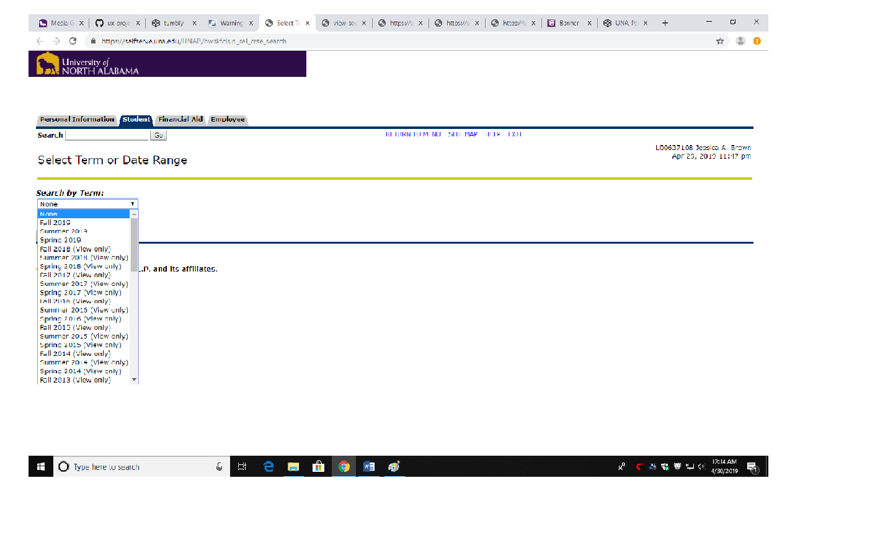

Link to repo.
Link to improved page.
The Issue
Selecting a term requires the user to scroll numerous items to select the correct one then to click the submit button after. The user also has to click a reset button to dismiss the previous term they selected to choose another. This can be improved by having sepearate buttons for the semesters and numbers without having to scroll. It can also be submitted after the field requirements are obtained from the clicks and can reset itself upon further clicks.
Below is the functionality of the current interface.
Below is a screenshot of the current UNA Portal interface displaying how the items cover a rather big section of the screen which would only increase in the future.
